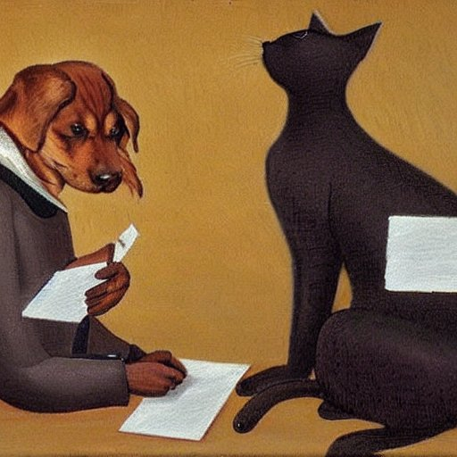

O pejskovi a kočičce, jak psali psaní děvčatům do Nymburka
Bylo to zrovna tak někdy v lednu, leželi pejsek s kočičkou každý ve své postýlce a povídali si o zimě. „Nějak se mně ani nechce z té teplé postele ven,“ povídá pejsek, „já mám zimu rád, zvlášť když je takhle dost sněhu, ale nesmí být ta zima tuze moc veliká. Já nevím, jestli se ti to také někdy stane, ale když mně vleze sníh mezi prsty a já ho mám potom plné tlapičky, to je tuze nepříjemné. To ti tak tuze zebe –“
„To já znám,“ řekla kočička, „to je tuze nepříjemné. Ale teďka mám nožičky tak pěkně zahřáté, horké, divže se mně z nich nekouří. Ono je v posteli tak pěkně, když je zima, že se mně ani vstávat nechce.“
„Víš co,“ řekl pejsek, „zůstaneme celý den v posteli a budeme si hrát v posteli.“
„To nejde,“ povídala kočka. „Nejsme přece nemocní, abychom byli celý den v posteli! A krom toho jsme dostali psaníčko od nymburských děvčat a už jsme jim dávno měli odepsat. Ještě o nás řeknou, že jsme špatně vychovaní a že nevíme, co se sluší a patří. Alou! pěkně vstávat a napíšeme jim to psaní; beztak nemáme dnes co jiného na práci.“
„Tak dobře,“ řekl pejsek. „Ať to děti vidí, že jsme dobře vychovaní. Napíšeme jim krásné psaní. Ale psát to budeš ty, to víš, já mám na to trochu těžkou ruku. Ale zato já ti budu zas říkat, co tam máš napsat.“
„To se rozumí, že to budu psát já,“ chlubila se kočka. „Když děti něco píšou a nejde jim to psaní pěkně, tak se jim vždycky říká: Lépe by to kočka naškrábala. Z toho je vidět, že kočky umějí lépe psát než mnohé děti.“
„A jejej, to jsem si ani nemyslil, že jsi tak šikovná!“ divil se pejsek. „Ale ta nymburská děvčata to pěkně napsala, já myslím, že to bylo napsáno skoro tak pěkně jako od koček, samá jednička, zvlášť ta jedna, teď už ani nevím, jak se jmenuje, ta to napsala tak krásně, jako když tiskne.“
„Já to taky tak napíšu, jako když tiskne,“ řekla skromně kočka. „Já totiž umím psát jen veliké písmo tiskací, to psané já nedovedu, to víš, do školy jsem nechodila, tak kdepak jsem se to měla naučit? – Ale copak o napsání? – napsáno to bude pěkně, to já to naškrábu tak krásně jako ta nejlepší kočka, jaká kdy na světě škrábala. Ale jen jestli v tom psaní nenapíšeme nějaké chyby.“
„To už nám děti musejí odpustit,“ povídal pejsek.
„Však ony zase, když chtějí mňoukat nebo hafat, tak to také docela dobře nedovedou a nadělají v tom plno chyb.“
„To je pravda,“ řekla kočička. „Když děti zkoušejí mňoukat, tak to nikdy nedělají docela dobře. Mňoukat se musí, panečku, krásně, jemně, tak tuze tence, a to se musí, milý brachu, tuze dobře vědět, kam se má v tom mňoukání dát měkké i a kam tvrdé y. Jinak se to všechno poplete a nikdo by tomu mňoukání pořádně nerozuměl, co se tím vlastně chce říct.“
„To máš zrovna tak jako s hafáním,“ povídá na to pejsek. „Když děti chtějí udělat haf!, to ti přitom nadělají nějakých chyb! Správně hafnout, to není, holenku, jen tak. To ti to musí nejdřív v prsou zarachotit a pak to musí z tebe vyštěknout rychle a statečně, jako když vystřelí, musíš při tom krásně hodit hlavou a škubnout hřbetem a zadníma nohama.“
„To při mňoukání se zas musejí krásně vykulit oči, hlavička dát drobet na stranu, trošičku při tom povstat a jemně se protáhnout. To by se děti tomu tuze dlouho musely ve škole učit, než by se to správně naučily, a vidíš, my kočky to umíme hned samy od sebe, už od narození. Ať to s nimi ve škole paní učitelka zkusí a budou vidět, jak je to těžké. Zkus to, oč, že to nedovedeš!“
„Co bych nedovedl?“ kasal se pejsek. „Koukej: Rrrrrr! Hňauf! Hňaf! Hňaf! Hňaf!“
„I kdežpak! to není žádné mňoukání,“ smála se kočka.
„Tak ty zkus hafnout!“ řekl pes.
„Mňááááuf, mňáaauf, ňauňauňáuf!“ udělala kočka.
„Ó je, copak myslíš, vždyť ty mňoukáš, to vůbec není žádné pořádné hafání!“ smál se kočce pes.
„Inu, každý, co umí,“ řekla kočka. „Tak teď se raději dáme do toho psaní, a když tam budou chyby, tak je to jen od toho, že jsme se správnému psaní ve škole neučili. Však si to ty děti mohou opravit; mohou si to naše psaní na tabuli napsat správně a bude to.“
„Tak piš,“ řekl pejsek, „já ti budu předříkávat, co.“
Kočička sedla a psala, co jí pejsek předříkával, a napsala děvčatům z Nymburka toto psaní:
Čtěné šlečni
v Nimbuce
Dě kujeme vam zavaše psa ní a o znám u jemevám
žesepří do bremz dravý vína trefujeme. Totéš jdou
fámeiu vas
fuctě
k očička a pejsek
„Já nevím,“ povídala kočička, když se pejsek podepsal, „myslím, že ses podepsal špatně. Psát se přece musí jemnou řečí, a tak se mně zdá, jako se nemá psát černej nebo zelenej, štěkavej, že se asi v jemné řeči nemá také psát pejsek.“
„To je možné,“ uznal pejsek, „tak já to škrtnu a napíšu to správněji. Jenomže teď nevím, mám-li to napsat s měkkým i, nebo s tvrdým y.“
„Já píšu všechno ponejvíce s měkkým,“ řekla kočka, „ono se mně měkké i zdá jemnější.“
„Když myslíš, napíšu tedy měkké i,“ řekl pejsek a podepsal se písek, „a teď to psaní doneseme na poštu.“
„Musíme se ale pořádně ustrojit,“ povídala kočička, „venku je náramná zima.“
Co se strojili, brali si na sebe svetry, zimní kabáty, vlňáky, kamaše a sněhovky, začal pejsek počichávat a povídá kočičce: „Tak tu krásně voní syreček, jak ho máme tamhle na polici schovaný, já bych ti měl na něj takovou ukrutnou chuť!“
„Jen ho nech!“ řekla kočička; „vrátíme se z pošty jistě hladoví, a když bys ho slupnul teď, neměli bychom pak nic.“
„Ale když on tak voní a já mám na něj takovou ukrutánskou chuť!“
„Nic!“ rozkázala kočka, „až se vrátíme z pošty.“ Pejsek se ještě jednou zamilovaně ohlédl po syrečku, zavřeli za sebou dveře a šli na poštu.
Tehdy se zrovna náramně chumelilo, jak už to tak letos v té velké zimě bylo. Sněhu habaděj pro lyžaře i pro sáňkaře, i těch klouzaček bylo letos dost. Tak se sypal, jako když se pytel s moukou roztrhne. Pejskovi a kočičce se to docela líbilo a spokojeně ťapali s tím psaním na poštu. Donesli psaní na poštu, kočička dala pejskovi olíznout známku, přilepili ji a připlácli pacičkami a dali do schránky. „Je prý teď tolik sněhu, takové závěje všude, že ani vlaky nemohou pořádně jezdit,“ řekla kočička, „ale doufám, že do velikonoc budou nymburská děvčata to psaníčko mít.“
Tak se zas vydali na cestu domů. Chumelilo se, jako kdyby peří z tisíce peřin sypal. „To se krásně chumelí,“ liboval si pejsek, „ani cestu už není vidět pod sněhem.“ Šli, šli, pořád se chumelilo, až jim to zachumelilo celý jejich domeček. Ani komín vidět nebylo.
Došli a hledali domeček. Domeček nikde. Všude jen sníh, tlusto sněhu, sníh a samý sníh.
„Jemine, kdepak je náš domeček!“ lekla se kočička. „Vždyť my ho teď nenajdem!“
Opravdu, domeček nebyl nikde k nalezení. Všude jen sníh a sníh, tak vysoký, že pod ním žádný domeček vidět nebylo. „Domeček je pryč,“ naříkala kočička, „kam my teď půjdem, co si počneme, když nemáme náš domeček?“
Pejsek kouká, kouká na všechny strany, nikde nic, všude jen samý sníh. „Už je to tak,“ bědoval, „domeček máme zachumelený a nikdo teď nepozná, kde je! Kam my se teď uchýlíme, kam my půjdeme spat, vždyť my venku zmrznem.“
„Abychom šli do Nymburka, že by se nás nymburská děvčata ujala, že by se o nás nymburské školačky postaraly a daly nám nějaký nocleh? Co si počneme, domeček pryč a do Nymburka je tak daleko! Ach, ach, když já ten náš domeček nikde nevidím!“
„Počkej,“ řekl pejsek, „já ho také nikde v tom sněhu nevidím, ale tak se mně zdá, že něco cítím. Jako kdybych trošičku cítil vonět ten syreček, co jsem měl na něj takovou velikou chuť.“
„To bude ono!“ radovala se kočička, „jen čichej, čichej, kde bude syreček, tam bude domeček!“ Pejsek čichal a čichal, šel pořád za tou vůní a tam, kde ucítil tu vůni nejsilněji, začal ve vysokém sněhu hrabat, až se dohrabal střechy. „Sláva!“ zvolal, „už jsme doma! Kde je domeček, tam je také syreček,“ a už se hnal do dveří, dovnitř a po syrečku. „Vidíš, měla jsem pravdu, když jsem říkala, abys nechal ten syreček, že se nám hodí, až se vrátíme z pošty domů. Vidíš, teď nám ten syreček zachránil život.“
Pěkně se spolu rozdělili, pejsek měl větší kousek, kočička menší. Psaní bylo napsáno a na poště odevzdáno, z města vedla špatná cesta, sníh s nimi neměl cit, zasypal jim celý byt, našli však svůj domeček, v tom domečku syreček, syreček snědli, vesele si při tom vedli, hráli si na honěnou a na schovávanou, a na vojáky taky a volali: „Ratata, ratata, ať žijou nymburská děvčata!“